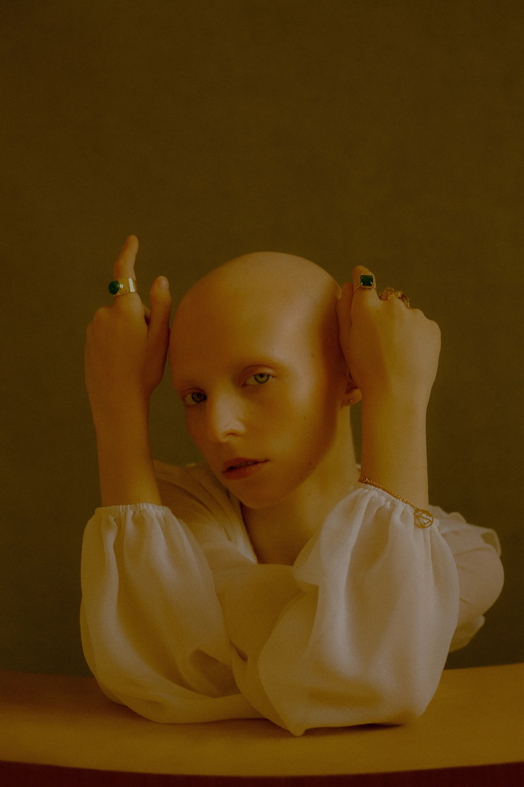
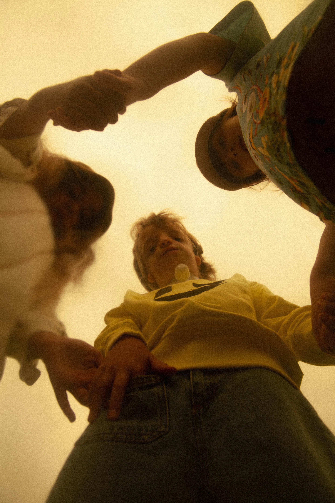
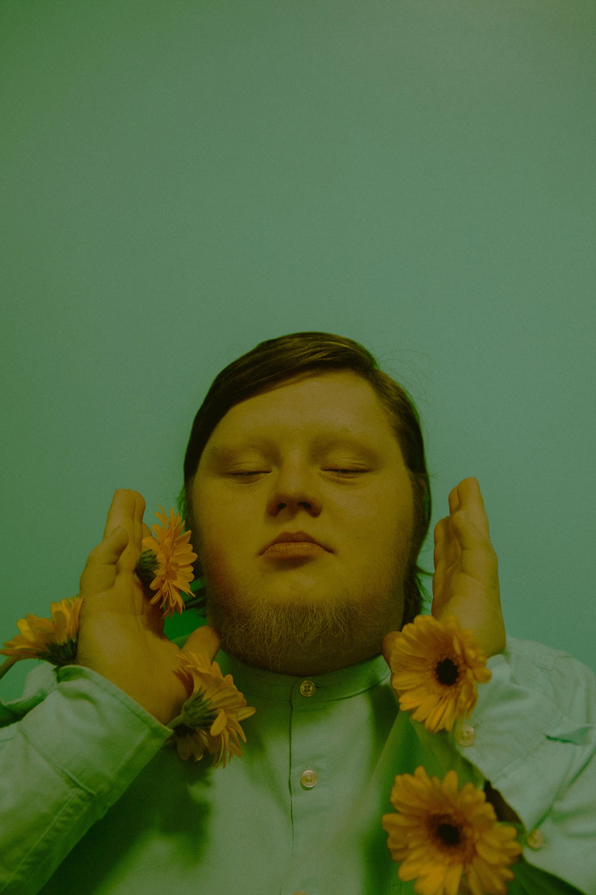
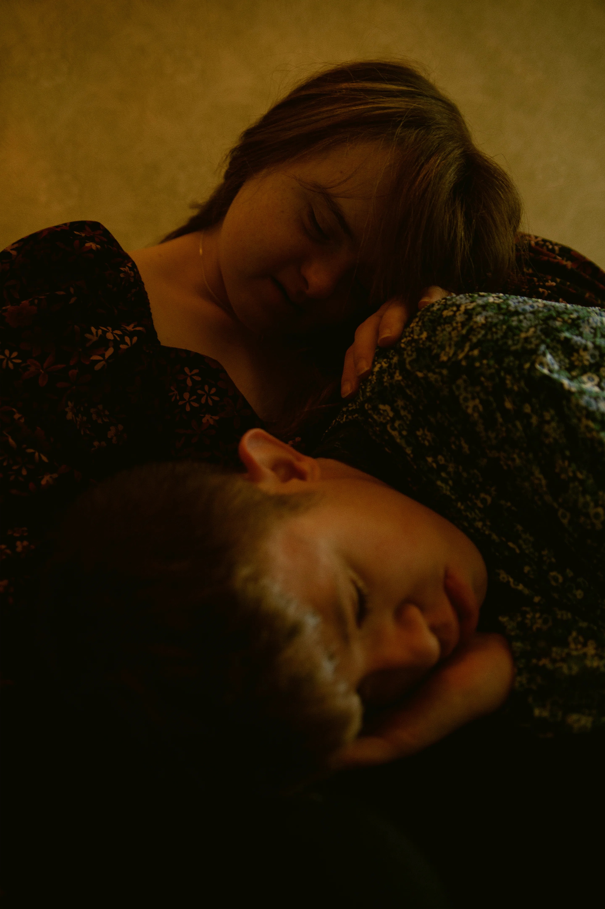
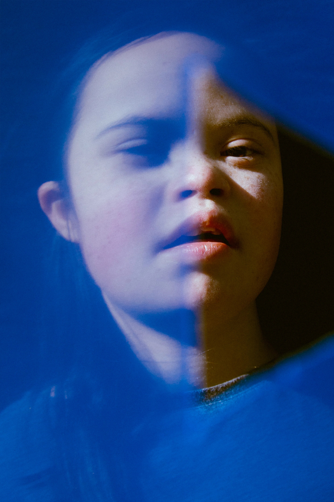
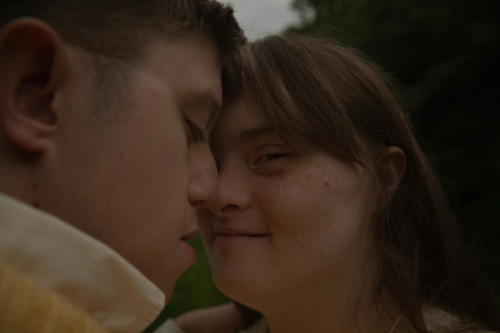
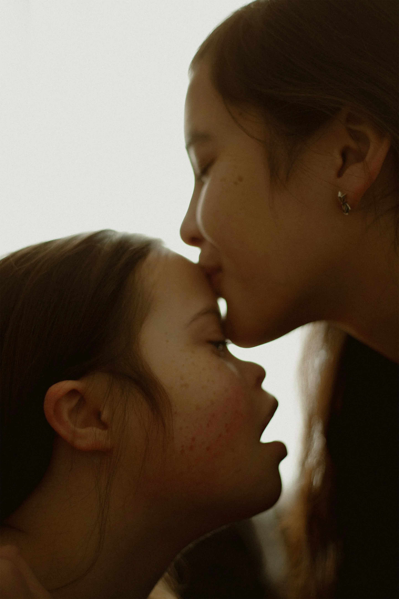
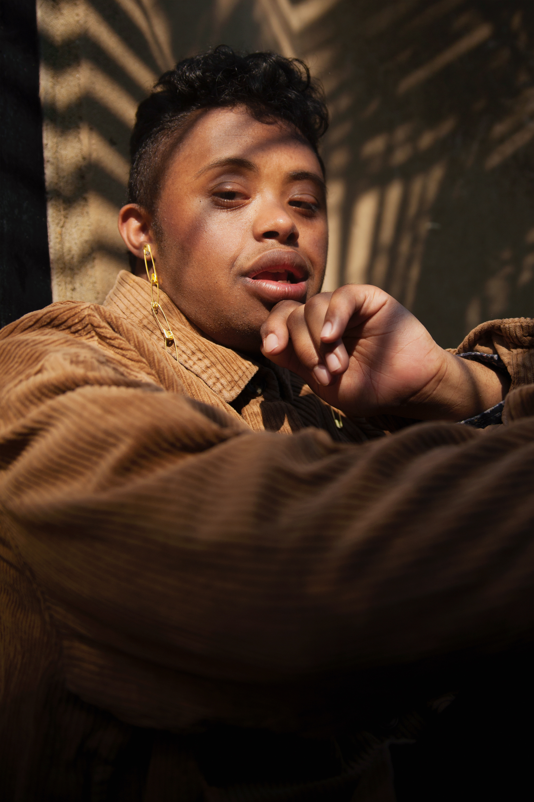
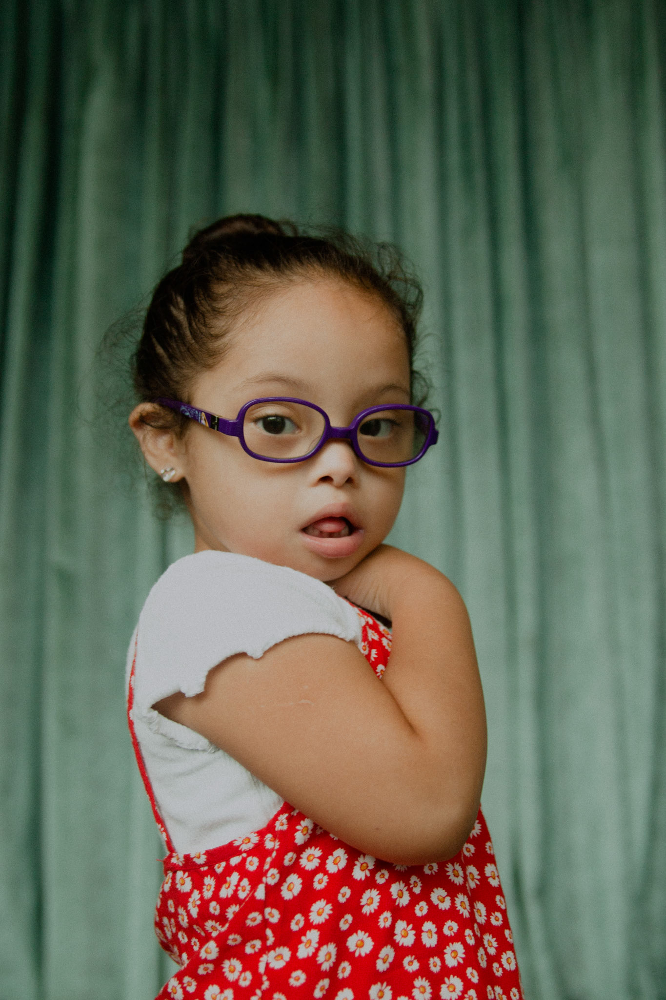

Anna Neubauer: It’ll All Work Out (Copyright © Anna Neubauer, 2021)
Anna Neubauer: Niamh, Adobe Max (Copyright © Anna Neubauer/Adobe,2021)
Anna Neubauer: Extraordinário, Harper’s Bazaar Brasil Kids (Copyright © Anna Neubauer/Harper’s Bazaar Brasil, 2021)
Anna Neubauer: The Lucky Few, Adobe (Copyright © Anna Neubauer/Adobe,2021)
Anna Neubauer: Chelsea Werner (Copyright © Anna Neubauer/Chelsea Werner, 2021)
Anna Neubauer: Forever Bound (Copyright © Anna Neubauer, 2021)
Anna Neubauer: See Through Heart, Adobe (Copyright © Anna Neubauer/Adobe, 2021)
Anna Neubauer: Isabella and Dominic, Adobe (Copyright © Anna Neubauer/Adobe, 2021)
Anna Neubauer: Younger Days (Copyright © Anna Neubauer, 2021)
Chelsea Werner (Copyright © Anna Neubauer/Chelsea Werner, 2021)
Anna Neubauer: Lightroom Discover Adobe Residency (Copyright © Anna Neubauer/Adobe, 2021)
Anna Neubauer: Lightroom Discover Adobe Residency (Copyright © Anna Neubauer/Adobe, 2021)